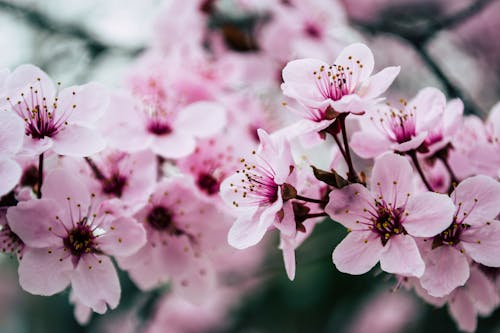

CEREJEIRA

O que é?
A Cerejeira, conhecida como Sakura no Japão, é uma árvore de beleza estonteante que floresce por um período muito curto no início da primavera. Suas flores delicadas e abundantes cobrem a copa da árvore, criando cenários que parecem saídos de um sonho. Ela simboliza a renovação e a natureza transitória da vida.
Como cuidar?
A cerejeira exige paciência e um ambiente adequado para prosperar:
- Luz: Precisa de sol pleno. A luz solar é fundamental para que ela consiga energia para a intensa floração anual.
- Solo: Prefere solos profundos, férteis e com ótima drenagem. Ela não gosta de ter as raízes "encharcadas".
- Clima: Elas precisam de um período de frio (inverno) para florescerem com vigor na primavera. São ideais para regiões de clima temperado.
- Poda: Deve ser feita com cuidado apenas para remover galhos secos ou doentes, preferencialmente após a queda das flores.
Curiosidades
- Hanami: No Japão, existe a tradição milenar do Hanami, que consiste em se reunir com amigos e família para contemplar a beleza das cerejeiras em flor.
- Floração Curta: As flores costumam durar apenas uma ou duas semanas antes de começarem a cair como uma "chuva de pétalas".
- Variedades: Existem mais de 200 tipos de cerejeiras, com flores que variam do branco puro ao rosa intenso, e até algumas com tons amarelados.
- Uso Culinário: As pétalas e folhas de cerejeira podem ser preservadas em sal e açúcar para serem usadas em doces e chás tradicionais.